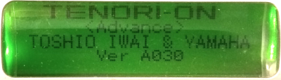
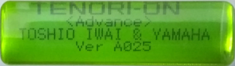
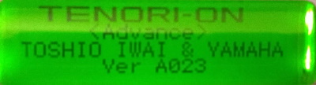
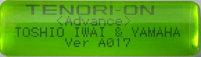
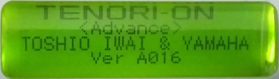
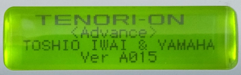
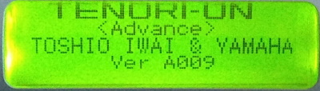
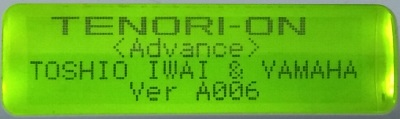

Releases
This page contains a link to the releases so far.
General installation instructions
Each release is provided as a zipped “.tup” file, to be loaded into the Tenori-On in the same way as you loaded v2.10.
That is :
- Unpack the .zip file and copy the
.tup to the TENORI-ON folder on your SD card. - Insert the SD card into your TENORI-ON. Turn the TENORI-ON while pressing [OK] and [CANCEL] simultaneously.
- After a short time, the firmware data list is displayed.
- Use the jog dial to select the firmware data to install, and then push the OK button.
- Press the OK button again when the “Start Update ?” query appears.
- The update will start after about 20 seconds. The update process takes about 90 seconds in total.
- Depending on SD card type, more time may be required.
When installation is complete, switch the TENORI-ON off, then on again.
The following then differs from the standard approach, because expected locations for things have moved around a bit.
If the system hangs on startup (i.e. never moves on from the title screen), then you will need to do a TEST MODE Factory reset. This will remove any loaded samples, but it is easy to put these back.
- Turn off, then turn on while holding [L1] and [CLEAR]. The text “Test Mode” and “TEST” will appear
- Use the rotary dial to change “TEST” to “047 Factory Set”. Press OK
- Wait until the “–” has changed to “End”. Then turn off and turn on.
If the system didn’t hang on startup, it is recommended to perform the “normal” factory reset, which is the same, but retains the user loaded samples. Use the System Menu to perform a Factory Reset. Recent release of the firmware have the TNR “advanced mode” permanently enabled, so you won’t have to do [L1] + [L5] on startup to restore it following a factory reset.
Release A040 provides backwards file compatibility. Releases prior to A040 will not play songs/layers/blocks from earlier releases (or the 2.10 release) correctly, since certain settings have changed.
Liability Waiver !
Please note that while these images work on my Tenori-on, I hold no liability for any damage they may cause to yours!
Contributors
Several people have contributed ideas for new features; ideas are always welcome. The queue for implementation is quite long, so please be patient!
The barrier to contributing code is quite high - you need a good working knowledge of assembly language - nevertheless, some users are managing to contibute code! Many thanks!
| User | Contributions |
|---|---|
| PAKL | Midigrid interface to Norns New feature testing Quick layer copy via R1 LCD Stack output for debugging Splits in push mode Abacus layer type Push inlays Multi layer loop points Screen echo |
Latest release
The latest release is A043. (11th October 2025). The known open bugs in the latest release can be seen below.
Each release contains, cumulatively, all the previous release features, so it is only necessary to download and install the latest release. The list of features in the latest release can most easily be seen by looking at the New Features tag.
| Release | Adds | Feature link | Download link |
|---|---|---|---|
| A043 | Direction changes | Direction change | A043 firmware |
List of open bugs
| ID | Issue | Appears in | Fix status |
|---|
Old releases
| Release | Adds | Feature link | Download link |
|---|---|---|---|
| A042 | Grid Layer Type Slave Midi Thru Bugfix for 035 |
Grid Layer Type Slave Midi Thru |
A042 firmware |
| A041 | Additional loop speeds Loop speed metacontroller Scale metacontrollers Solo layer animation |
Loop speeds Loop speed metas Scale metas Solo animations |
A041 firmware |
| A040 | Compatability with older files Bugfixes for 034 |
File versions | A040 firmware |
| A039 | Rotary dial emulation Bugfixes for 033 |
Rotary dial emulation | A039 firmware |
| A038 | Audition setting in SCR and RND Screen echo to computer Bugfixes for 031 and 032 Slightly improved user sample loading |
Audition setting in SCR and RND Screen echo |
A038 firmware |
| A037 | Chord Meta Encoder debounce Better split handling Bugfixes |
Chord Meta Debounce |
A037 firmware |
| A036 | Accidental split in Push L4 inlays for Push L4 multi-tap for scoreX Send to layer Bugfixes |
Splits Push inlays Multi layer loop points Send #027 and #028 |
A036 firmware |
| A035 | Sustain and Portamento Splits Bugfixes |
Splits Fix for bug 024, 025, 026 |
A035 firmware |
| A034 | ScoreX (was Score256) Layer Type Rain Layer Type Game of Life Probability Meta New effects types Sound changing metas New MIDI CCs |
ScoreX Rain Life Probability meta Effects Sound metas MIDI CC |
A034 firmware |
| A033 | Bugfixes release Accidental split |
Fix for bug 021, 022 Accidentals |
A033 firmware |
| A032 | Bugfix release | Fix for bug 020 | A032 firmware |
| A031 | XY Layer mode Volume, Chorus, Reverb Meta 256 note draw Push animation |
XY Layer mode New metas |
A031 firmware |
|  | “Send” Meta Delayed Block Change New animations |
Send meta Delayed Block change New animations |
A030 firmware |
| A029 | Abacus Layer Type Offbeat split |
Abacus layer Updated splits |
A029 firmware |
| A028 | Split implementation in Push mode, Chance & Pan splits, MIDI compliant start, Pan & Velocity Meta controller, Bugfixes |
Updated splits Compliant MIDI start Pan and Velocity meta controllers |
A028 firmware |
| A027 | Score256 bar length, Quick Layer copy, Bugfixes |
Score256 now uses master loop to set bar length Quick layer copy via R1 |
A027 firmware |
| A026 | Meta controller feature improvements | Score+Score256 mode : meta controllers act “in time” rather than late. Score256 mode : current block does not change when block change meta used |
A026 firmware |
|  | Refined MIDI features, fix for bugs 004 and 007 | MIDI Transport Extended Recording Extended MIDI quiet Extended Block change |
A025 firmware |
| A024 | Bugfix release | Performance improvement, Fix for bugs 010 + 011 | A024 firmware |
|  | Unlocked (limited) user sample pitch shifting | Limited User sample pitch shift | A023 firmware |
| A022 | Bugfix release | Fix for bugs 008 + 009 | A022 firmware |
| A021 | Arp-4 meta controller + fix for bug 006 | Arp-4 meta controller | A021 firmware |
| A019 | Transpose meta controller + fix for bugs 003 and 005 | Master Transpose meta controller | A019 firmware |
| A018 | Recording | Recording | A018 firmware |
|  | Block change meta controller + fix for bug 002 | Block change meta controller | A017 firmware |
|  | Control Change | Control Change | A016 firmware |
|  | Splits | Splits | A015 firmware |
| A014 | Bugfix release | Fixes bug 001 : “Save as Alarm / Chime / Default” error | A014 firmware |
 |
256-step score | Score 256 | A013 firmware |
| A010 | Remote block change | Block change | A010 firmware |
|  | Selectable Sysex output | Midi quiet | A009 firmware |
| A008 | Per-layer midi channels | Per layer midi channel | A008 firmware |
|  | Per-layer scales Additional scales |
Per layer scales | A006 firmware |
List of closed bugs
| ID | Issue | Appears in | Fix status |
|---|---|---|---|
| 001 | Save As (Save as default, save as alarm, save as time signal) fails for settings - saved settings are not used. | A008-A013 | Fixed in A014 and later |
| 002 | In score modes, changing blocks to block N results in notes playing that are a mixture of blocks N and N+1 | A015-A016 | Fixed in A017 |
| 003 | Using the block change meta controller, the LED display of the loop points doesn’t update, so that L4 shows loop points that are “off screen” | A017-A018 | Fixed in A019 |
| 004 | Using the rotary dial to modify the loop points while [L4] is pressed causes the TNR to reboot | A013-A024 | Fixed in A025 |
| 005 | Saving + loading blocks and songs with the new layer settings does not preserve the new settings | A013-A018 | Fixed in A019 |
| 006 | Release A019 broke the recorder from A018 ! | A019 | Fixed in A021 |
| 007 | Midi recorder timing (i.e. grid position) in score mode incorrect | A018, A021-A024 | Fixed in A025 |
| 008 | Similar to 003, off-screen loop display in score-256 “leaks” into current display when function keys are used | A021 | Fixed in A022 |
| 009 | Layer 16 has “ghost” notes in block 1 when block is playing off-screen | A013-A021 | Fixed in A022 |
| 010 | Setting layer volume with [R4] results in some LEDs dimly lit incorrectly (visual effect only) | A016-A023 | Closed in A024 |
| 011 | Master Scale menu range does not include all user defined scales | A022 | Closed in A024 |
| 012 | Launching master loop point from score256 when loop points are offscreen leaks LED state (similar to 003, 008) | A022 | Closed in A027 |
| 013 | Score256: If loop end is block 16, position16, loop start is ignored | A026 | Fixed in A027 |
| 014 | Score256: Block copy confuses off-screen display of loop points | A026 | Fixed in A028 |
| 015 | Score256: Splits are not correctly timed for off-screen blocks | A026 | Fixed in A027 |
| 016 | Quick copy: type not forced when all blocks chosen. | A027 | Fixed in A028 |
| 017 | Reset loop position (L1+R4) leads to timing error with meta controllers | A026 | Fixed in A028 |
| 018 | Clear with a Send meta clears all layers rather than just the target | A030 | Fixed in A031 |
| 019 | Note-on, when note is already playing, results in note-off on layer 1 rather than source layer | A030 | Fixed in A031 |
| 020 | Setting splits broken in A031 | A031 | Fixed in A032 |
| 021 | Start/stop MIDI transport not working | A028 | Fixed in A033 |
| 022 | Layer recording even when record mode set to off | A028 | Fixed in A033 |
| 023 | BC meta fails to change block when visible layer is scr256 | A026 | Fixed on A034 |
| 024 | Setting master scale results in no notes | <A034 | Fixed in A035 |
| 025 | Changing loop points with rotary dial only works in one direction | <A034 | Fixed in A035 |
| 026 | Offbeat split broken in ScoreX | A034 | Fixed in A035 |
| 027 | Velocity mode in MIDI record broken | ? | Fixed in A036 |
| 028 | User samples transpose despite setting and several other menu setting bugs |
? | Fixed in A036 |
| 029 | Incorrect character separator in Meta and CC instrument name (very minor) | A036 | Fixed in A037 |
| 030 | L+R Button combinations not working reliably after menu operations | A036 | Fixed in A037 |
| 031 | Push Inlays don’t stay on | A037 | Fixed in A038 |
| 032 | Loading user samples always fails | A037 | Fixed in A038 |
| 033 | TNR does not respond to MIDI transport messages (start/stop) in both Master and slave modes | A038 | Fixed in A039 |
| 034 | Song recording broken by encoder emulation update | A039 | Fixed in A040 |
| 035 | SD card access (file saving, loading) broken due to overeager attempts to optimise | A041 | Fixed in A042 |